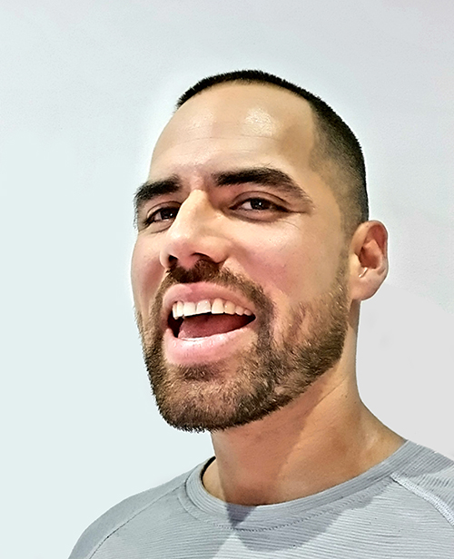

 I began my journey this year, I started taking Computer Hardware and my teacher encouranged me to give a presentation about other technologies. So I created this site and hopefully after taking and learning more skills I can launch an IT business. My future goals for this company would be to become a trusted partner to many residents and businesses in San Francisco and the surrounding Bay Area.
I would like to have an ever growing team of highly skilled engineers and consultants coming from diverse backgrounds, all very passionate about technology, and more importantly all beliving and delivering service with a smile. I would like to be one of the most highly rated IT Consultants in the Bay Area. At Vlads IT Solutions, we believe in delivering exceptional service, enabling our customers to make the most out of technology at home and the workplace and beyond.
Our Culture
We don't live in the bubble the typical "IT person" resides. Instead, we value a creative approach to serving our customers equally as much as a scientific approach. We also practice what we preach in that we heavily rely on the same technology and concepts in our own business that we recommend to our customers.
We say this with immense humility - What we do is important. Hundreds of businesses rely on our services. Perhaps more importantly, we rely on each other. Therefore, it is of utmost importance that we do what we say we’re going to do. We are dependable people and follow through from beginning to the end.
Who we are is as important as what we do. We have a unique and eclectic company culture that produces a team that works hard, works smart, and perhaps most importantly - has fun. Our team of superstars has many years of industry experience in a wide variety of sectors from technology to finance, and everything in between.
Yelp icon icon by Icons8 Facebook icon icon by Icons8 Instagram icon icon by Icons8 Processor icon icon by Icons8 Color Wheel icon icon by Icons8